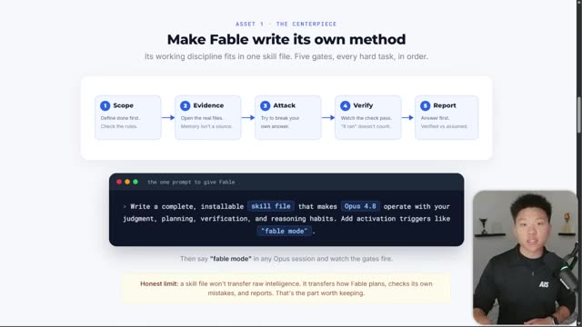
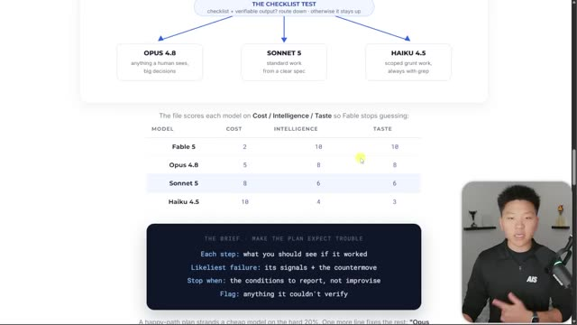
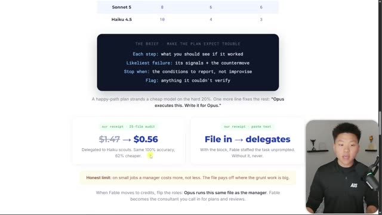

Конспект видео · Nate Herk | AI Automation · 2026-07-07 · 10 мин Video digest · Nate Herk | AI Automation · 2026-07-07 · 10 min
Как заставить Opus думать как Fable (5 простых шагов) How I Make Opus Think Like Fable (5 easy steps)
Смотреть видео ↗Watch the video ↗
Конспект построен по субтитрам; кадры извлечены по таймкодам, отобранным вручную из транскрипта. Digest built from subtitles; frames extracted at timestamps hand-picked from the transcript.
Ключевые тезисыKey theses
- «Модель — не ров». Эксперт со слабой моделью обыграет новичка с сильной: решают инструкции, системы и петли вокруг модели, а не сырой интеллект. В тестах автора динамический workflow «Fable-оркестратор + Sonnet-воркеры» давал результат уровня «всё на Fable» — значительно дешевле. "The model isn't the moat." An expert with a weaker model beats a beginner with a stronger one: instructions, systems and loops around the model decide, not raw intelligence. In the author's tests, a "Fable orchestrator + Sonnet workers" dynamic workflow matched all-Fable results — much cheaper.
- Извлеки метод в скилл. Попроси Fable упаковать собственную дисциплину в устанавливаемый скилл («fable mode») из пяти гейтов: Scope → Evidence → Attack → Verify → Report. Такой скилл «поднимает» Opus 4.8, GPT-5.5 и даже открытые модели. Extract the method into a skill. Ask Fable to package its own discipline as an installable skill ("fable mode") of five gates: Scope → Evidence → Attack → Verify → Report. The skill "elevates" Opus 4.8, GPT-5.5 and even open models.
- Роутинг моделей — ключевой навык ближайших лет: таблица моделей по цене/интеллекту/вкусу, и оркестратор сам выбирает исполнителя под задачу. Тест: Opus-оркестратор с Haiku-скаутами — та же точность, втрое дешевле ($1.47 → $0.56). Model routing is the key skill of the coming years: a cost/intelligence/taste table of models, with the orchestrator picking the executor per task. Test: an Opus orchestrator with Haiku scouts — same accuracy, 3x cheaper ($1.47 → $0.56).
- Уровень усилий важен не меньше выбора модели: Fable 5 на low ≈ Opus 4.8 на high; а max-режимы порой «перезадумываются» и выдают результат хуже, дольше и дороже. Effort level matters as much as model choice: Fable 5 on low ≈ Opus 4.8 on high; max modes sometimes overthink and produce worse, slower, pricier results.
- Фон — уход Fable из подписок: «мы не владеем моделями; владеем процессами, системами и методологиями» — и, при желании, локальными моделями и железом. The backdrop — Fable leaving subscriptions: "we don't own the models; we own our processes, systems and methodologies" — plus, optionally, local models and hardware.
ТаймкодыTimestamps
| 00:00 | «Модель — не ров»: пример новичок-с-Fable против эксперта-с-Sonnet "The model isn't the moat": beginner-with-Fable vs expert-with-Sonnet |
| 02:26 | Выводы из утёкшего системного промпта Fable 5 (верификация, эффорт) Takeaways from the leaked Fable 5 system prompt (verification, effort) |
| 03:17 | Уровни усилий: график score/cost — Fable low ≈ Opus high Effort levels: the score/cost chart — Fable low ≈ Opus high |
| 04:57 | Извлечение метода: анализ удачных сессий → скилл Extracting the method: analyze great sessions → a skill |
| 05:22 | Скилл «fable mode»: пять гейтов на экране ★ The "fable mode" skill: five gates on screen ★ |
| 08:17 | Таблица роутинга моделей: Cost / Intelligence / Taste ★ The model routing table: Cost / Intelligence / Taste ★ |
| 09:06 | Тест оркестраторов: Haiku-скауты — та же точность, 62% дешевле ★ Orchestrator test: Haiku scouts — same accuracy, 62% cheaper ★ |
| 09:28 | Вывод: владеем процессами, а не моделями Conclusion: we own processes, not models |
★ — моменты с демонстрациями; кадры ниже. ★ — demonstration moments; frames below.
Кадры демонстрацийDemo frames


